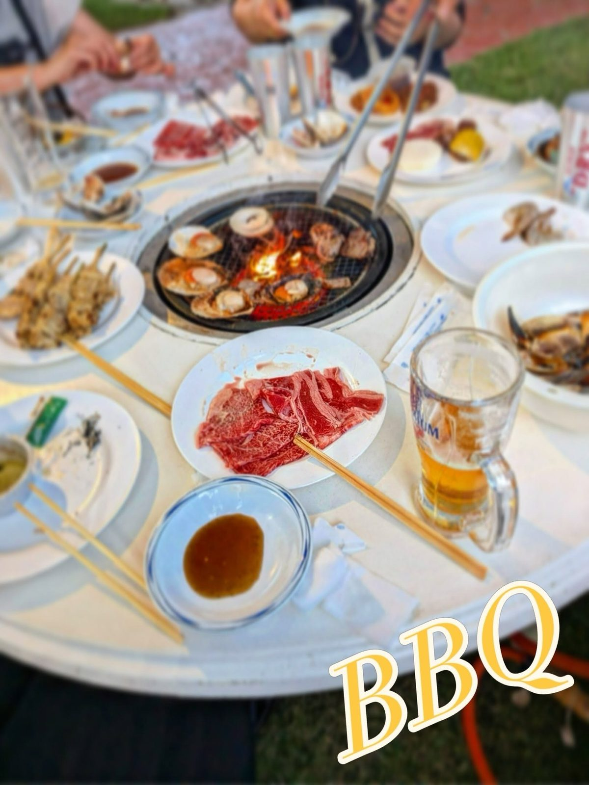
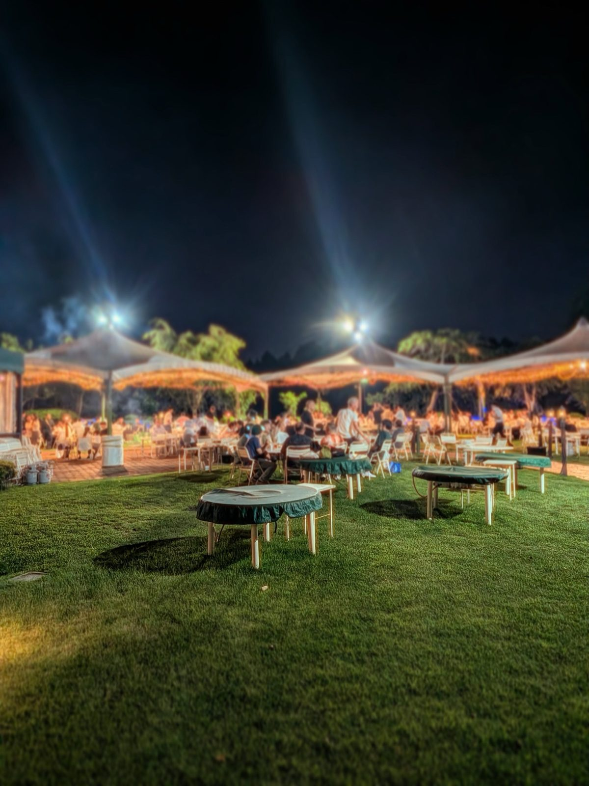

先輩からのメッセージ
実際に働く先輩の声が入ることで、応募前の不安がぐっと下がります。
※ここはサンプルです。実際に働く先輩からのメッセージ・写真に差し替えます。S.Kさん
製造スタッフ／入社5年目
前職は飲食の板前でした。モノづくりは全くの未経験でしたが、先輩が横についてイチから教えてくれたので、今では大型の加工も任されています。
T.Mさん
製造スタッフ／入社3年目
土日祝休みで残業も少なく、家族との時間が増えました。自分が加工した部材が街の建物に使われていると思うと、通勤中も少し誇らしい気持ちになります。
Y.Aさん
製造スタッフ／入社1年目
少人数の会社なので、社員同士の距離が近いのが良いところ。ログハウスでみんなで食べるお昼ごはんが毎日の楽しみです。

